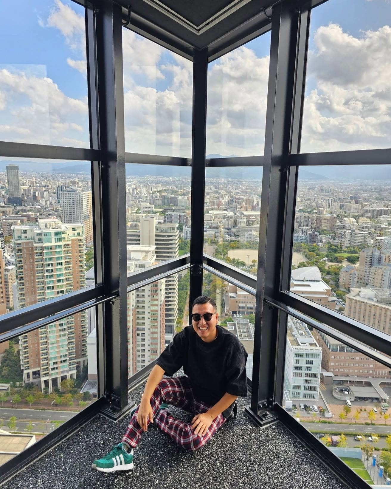
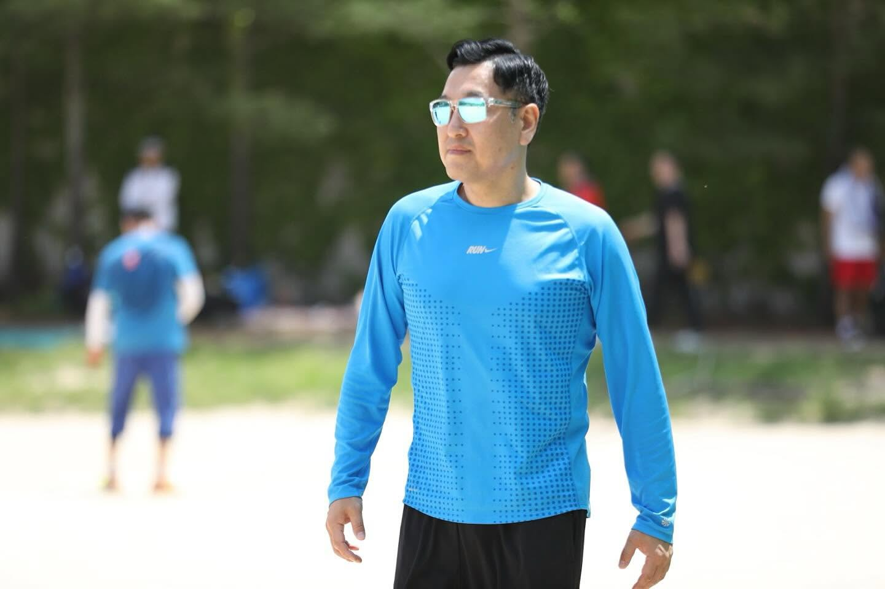
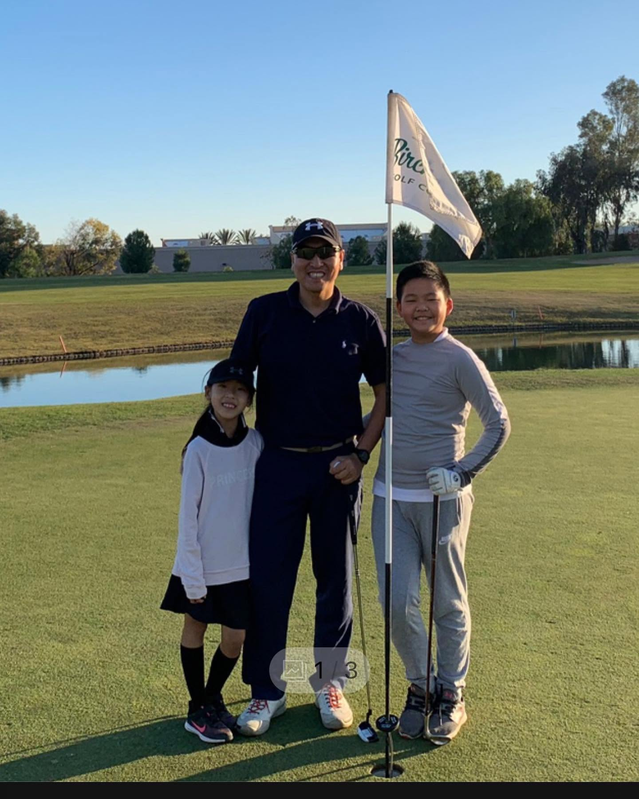

Professor of Marketing at Hankuk University of Foreign Studies. 통계로 소비자를 읽고, 텍스트에서 시장의 속마음을 꺼내는 마케팅 퀀트입니다.


서울대에서 경영학을, 컬럼비아에서 통계학을, 아이오와에서 마케팅 박사를 마쳤습니다. 오클랜드 대학교를 거쳐 2014년부터 한국외국어대학교에서 학생들과 데이터를 읽고 있습니다.
관심사는 자연어처리(NLP)로 텍스트에서 마케팅 인사이트를 뽑는 일, 마케팅 애널리틱스, 그리고 "정말 어디서나 성립하는 법칙인가?"를 묻는 경험적 일반화입니다. 가끔은 게임, 항공, 에너지, 화장품 같은 엉뚱한 곳에서도 답을 찾습니다.
한 사람이 학습되는 과정. 에폭이 쌓일수록 loss는 줄고 호기심은 늘었습니다.
고등학교 졸업
loss: 높음 · 가능성: 무한B.A. in Business Administration · 경영학
feature learned: 비즈니스의 문법M.S. in Statistics · 통계학
feature learned: 불확실성을 숫자로 말하기Ph.D. in Marketing · 마케팅
feature learned: 소비자는 확률분포다교수 · 마케팅
Professor of Marketing · 한국외국어대학교 경영학부
status: still learning별 하나가 논문 하나. 크기는 인용 수, 색은 주제입니다. 별을 눌러 보세요.
주절주절 적어 둔 생각들. 어디로 갈지는 저도 모릅니다.
곧 글이 하나둘 올라옵니다.
A/B 테스트, 표본이 얼마나 필요할까요? 직접 만져 보세요. (양측검정, 검정력 기준 정규근사)
